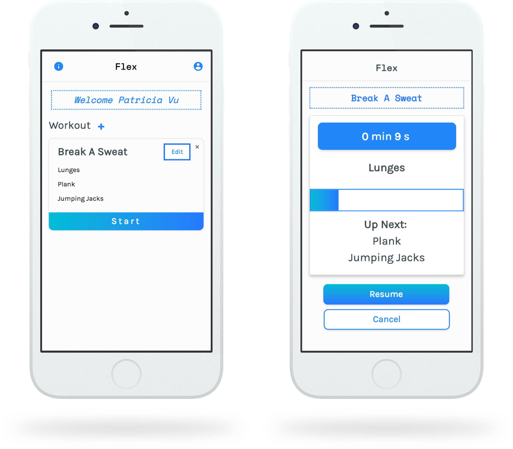

Home
Resume
Flex
A personal workout timer, led by soundfeedback

Sorry!
This page is still under construction, but feel free to explore my other projects!
If you have any questions about Flex, I'd love to chat with you.
You can email me at patriciavu96@gmail.com!
view other projects